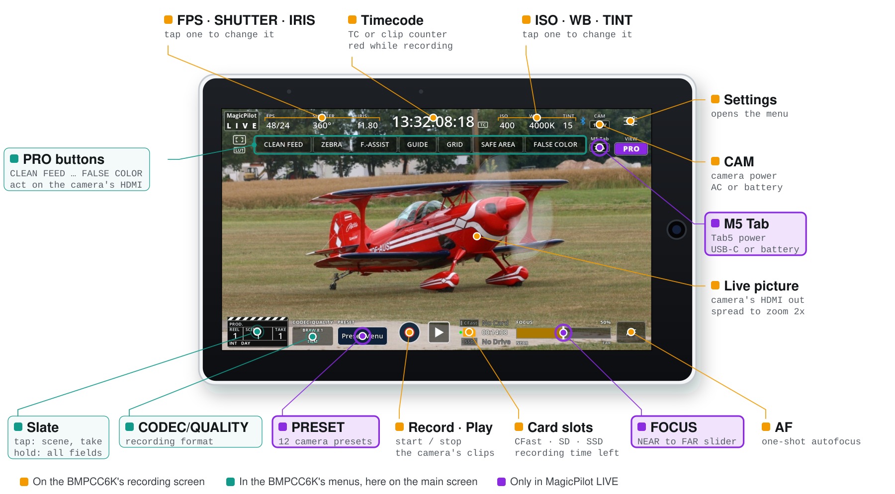
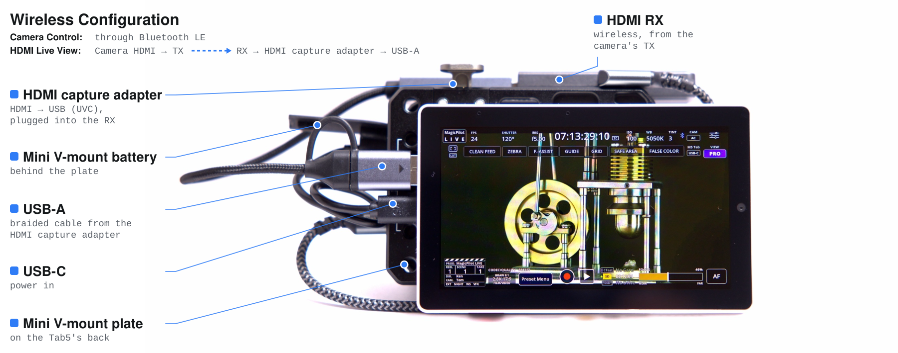
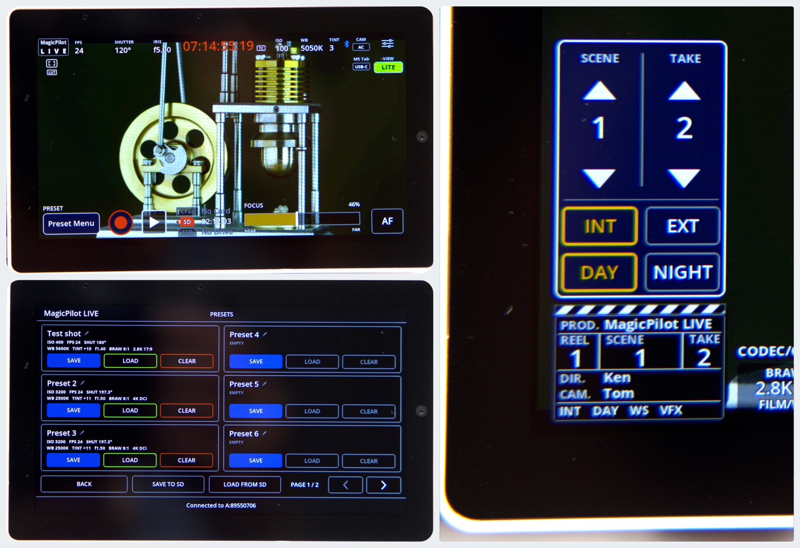
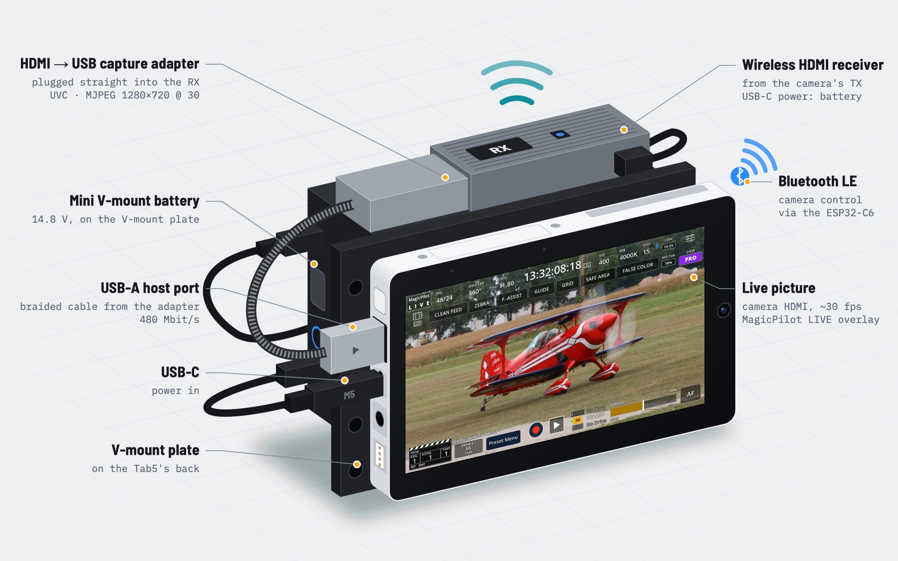

Why a monitor and remote in one?
One screen for picture and settings. The Tab5 shows what the camera sees and what it is set to, laid out like the camera's own screen, so you can frame, check focus and change exposure without looking away.
Everything on the main screen. Many settings that the BMPCC6K keeps in its menus are one tap away on MagicPilot LIVE's main screen: codec and quality, the slate, clean feed, zebra, focus assist, false colour and guides. Camera presets and the NEAR → FAR focus slider aren't on the camera at all. You change them while you watch the picture, instead of digging through menus.
When the camera is out of reach. On a crane, a jib or a car mount, a wireless HDMI link brings the picture to the Tab5, and Bluetooth LE lets you change settings, pull focus and start recording from where you stand.
Features
📺 Live picture
The camera's HDMI output, full screen in landscape at 30 fps. Spread two fingers to zoom 2× and check focus.
📊 Camera status
FPS, shutter, iris, timecode, ISO, white balance, tint, LUT, recording and card slots. Tap a value to change it.
💾 Camera presets
12 named presets kept on the Tab5, and saved to microSD as readable JSON.
🎬 Slate
The camera's slate as a clapperboard: tap for scene, take, INT/EXT and DAY/NIGHT, hold for every field.
🎯 Focus
NEAR → FAR focus slider and the camera's one-shot autofocus.
🎥 Record
Start and stop recording; the timecode turns red while the camera records.
⚙️ Record settings
Codec and quality, resolution, dynamic range, frame rates and sharpening.
📐 Display tools
The camera's frame guides, grid and safe area, plus zebra, focus assist and false colour.
🔗 Pairing
Asks for the camera's PIN once, then reconnects automatically.
On the Tab5

LITE and PRO, with or without HDMI
The VIEW button switches between LITE, with fewer and bigger controls, and PRO, with the CLEAN FEED … FALSE COLOR buttons, the slate and the CODEC/QUALITY box. With live view off, or without the capture adapter, the Tab5 is a Bluetooth remote with bigger controls.
With HDMI input, the CLEAN FEED … FALSE COLOR buttons act on the camera's HDMI output, so they change the video on the Tab5. Without it, they change the view on the camera's own LCD.

Hardware

- M5Stack Tab5 (ESP32-P4, 5″ 1280×720 touchscreen); its ESP32-C6 handles Bluetooth
- HDMI to USB capture adapter (UVC with MJPEG, e.g. MS2109 or MS2130 sticks) in the Tab5's USB-A port, the only high-speed port
- Blackmagic Pocket Cinema Camera 6K with Bluetooth on (other cameras: see camera compatibility)
- Optional: a wireless HDMI transmitter and receiver between camera and adapter, a battery, and a FAT32 microSD card for presets
Cost (without the camera and without the M5 Tab battery): about $80 wired (Tab5, capture adapter and HDMI cable), or about $120 wireless (with an HDMI transmitter and receiver).
Build and flash
With PlatformIO (pioarduino platform):
pio run -t upload --upload-port /dev/cu.usbmodemXXXX
pio device monitoror ESP-IDF 5.5.3 or later:
idf.py set-target esp32p4
idf.py build flash monitorThe first time, the Tab5 asks for the 6-digit PIN from the camera's Setup menu, page 6.
Camera compatibility
The live picture works with any camera that has an HDMI output. Camera control uses the Blackmagic Camera Control Bluetooth protocol that Blackmagic's Bluetooth cameras share, but only the BMPCC6K is tested.
| Camera | Status | Notes |
|---|---|---|
| Pocket Cinema Camera 6K (BMPCC6K) | 🟢 Tested | |
| Pocket Cinema Camera 6K G2 / 6K Pro | 🟡 Not tested | Same sensor and modes as the 6K: very likely to work as is |
| Pocket Cinema Camera 4K (BMPCC4K) | 🟡 Not tested | Status and controls should work; the format menu lists the 6K's modes |
| Other Blackmagic cameras with Bluetooth | 🟡 Not tested | Basic control should work; resolutions, frame-rate limits and media slots need adapting |
Reports from other cameras are welcome.
Frequently asked questions
How do I see a Blackmagic Pocket Cinema Camera 6K's picture on the M5Stack Tab5?
Plug an HDMI to USB capture adapter (UVC with MJPEG, such as MS2109 or MS2130 sticks) into the Tab5's USB-A port and connect it to the camera's HDMI output, by cable or through a wireless HDMI transmitter and receiver. MagicPilot LIVE shows the picture at about 30 fps under the camera overlay.
Does it work without the HDMI picture?
Yes. With live view off, or without the capture adapter, the Tab5 is a Bluetooth remote with bigger controls.
Do I need a phone or the Blackmagic Camera app?
No. The Tab5 talks to the camera directly over Bluetooth LE through its ESP32-C6. It asks for the camera's PIN once, then reconnects automatically.
Which Blackmagic cameras are supported?
The Blackmagic Pocket Cinema Camera 6K is tested. The 6K G2 and 6K Pro share its sensor and modes and are very likely to work as is. On the Pocket 4K and other Blackmagic Bluetooth cameras, status and controls should work, but the resolutions, frame-rate limits and media slots are the 6K's. The live picture works with any camera that has an HDMI output.
What can't be changed over Bluetooth?
The BMPCC6K refuses switching between BRAW and ProRes, ProRes resolutions, Film dynamic range and the LUT over Bluetooth; the Tab5 tells you to set those on the camera. It doesn't send card names, capacity, audio levels, custom white balance, zebra, focus assist, false colour or playback, so the Tab5 can't show them.
Is MagicPilot LIVE free?
Yes. MagicPilot LIVE is open-source firmware licensed under the LGPL-2.1.